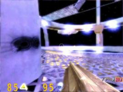
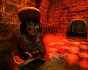
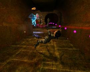

OpenArena
Dieser Artikel wurde für die folgenden Ubuntu-Versionen getestet:
Ubuntu 14.04 Trusty Tahr
Zum Verständnis dieses Artikels sind folgende Seiten hilfreich:
OpenArena  ist ein reiner Multiplayer-Shooter mit rudimentärem Einzelspielermodus. Er entstand aus der Idee heraus, dass zwar der Quelltext der Quake 3 Engine, nicht aber die restlichen Spieledaten von id Software unter einer freien Lizenz gestellt wurden. Das OpenArena-Projekt füllt diese Lücke mit neuen, selbst erstellten Modellen und Grafiken für einen komplett freien Quake 3-Klon. Obwohl jede Datei ersetzt wird, bemüht man sich die Kompatibilität zu ehemaligen Quake 3 Mods beizubehalten.
ist ein reiner Multiplayer-Shooter mit rudimentärem Einzelspielermodus. Er entstand aus der Idee heraus, dass zwar der Quelltext der Quake 3 Engine, nicht aber die restlichen Spieledaten von id Software unter einer freien Lizenz gestellt wurden. Das OpenArena-Projekt füllt diese Lücke mit neuen, selbst erstellten Modellen und Grafiken für einen komplett freien Quake 3-Klon. Obwohl jede Datei ersetzt wird, bemüht man sich die Kompatibilität zu ehemaligen Quake 3 Mods beizubehalten.
| Bildschirmfotos | ||
|  |  |  |
| © OpenArena Team - Lizenz: GNU GPL | ||
Hinweis:
Zu beachten ist, dass man mit OpenArena nicht auf den gleichen Servern online mit Quake 3 oder ioQuake zusammenspielen kann. Dies gilt auch für Quake 3 Mods, die man mit OpenArena spielt.
Installation¶
Für die Soundausgabe wird zunächst das Paket
libopenal1 (universe)
 mit apturl
mit apturl
Paketliste zum Kopieren:
sudo apt-get install libopenal1
sudo aptitude install libopenal1
benötigt [1].
Aus den Paketquellen¶
Um OpenArena spielen zu können, installiert [1] man das Paket
openarena (universe)
mit apturl
Paketliste zum Kopieren:
sudo apt-get install openarena
sudo aptitude install openarena
Manuell¶
Dazu muss man nur das Archiv von hier herunterladen und entpacken.
Im entstandenen OpenArena-Ordner wird je nach System die Datei openarena.i386 (32bit Prozessor) oder openarena.x86_64 (64bit Prozessor) ausgeführt [2]. Man kann sich hierfür auch einen Menüeintrag [4] und Verknüpfungen anlegen.
Um das Spiel noch etwas komfortabler starten zu können, empfiehlt es sich, ein Startskript zu erstellen. Dazu erstellt man mit einem Editor [5] die Datei openarena mit folgendem Inhalt:
#!/bin/sh cd /Pfad/zu/OpenArena ./openarena.x86_64 $*
Hierbei muss der Pfad /Pfad/zu/OpenArena und ggf. die ausführbare Datei natürlich angepasst werden. Anschließend muss das Skript noch ausführbar gemacht werden [6]:
chmod +x openarena
Bei einer Root-Installation kann das Skript nach /usr/local/bin, bei einer Benutzer-Installation in den Ordner ~bin verschoben werden. Nun kann das Spiel mit dem Befehl
openarena
gestartet werden [2].
Mods und andere Erweiterungen¶
Installation und Start von Mods¶
Hinweis:
Da (noch) nicht alle Dateien von Quake 3 restlos ersetzt wurden, kann es bei einigen Mods zu Problemen kommen bzw. sie laufen gar nicht erst mit OpenArena. Eine Liste, welche Mods laufen und welche nicht, gibt es hier .
Beim Installieren von Mods muss man darauf achten, ob das Archiv des heruntergeladenen Mods einen neuen Ordner kreiert oder nicht. Wenn ja, entpackt man den Mod einfach ins OpenArena-Verzeichnis oder nach ~/.openarena im Homeverzeichnis [3]. Wenn nicht, erstellt man vorher im OpenArena-Verzeichnis oder in ~/.openarena einen neuen Ordner und entpackt den Mod in diesen [3]. Anschließend kann er entweder im Hauptmenü unter Mods ausgewählt werden oder mit dem Befehl
openarena set fs_game Ordnername
direkt gestartet werden [4]. Mit Ordnername ist der Name des Ordners gemeint, in dem sich der Mod befindet.
Installation von anderen Erweiterungen¶
Um andere Erweiterungen wie neue Karten, Modelle etc. zu installieren, müssen sie einfach in den Unterordner baseoa im OpenArena-Verzeichnis oder nach ~/.openarena/baseoa im Homeverzeichnis entpackt werden [5].
Tipps¶
Spielinterne Konsole öffnen¶
Bei deutschen Tastaturen öffnet man die spielinterne Konsole mit Alt Gr + zweimal + .
Dualcore¶
Um den Multiprozessorbetrieb zu aktivieren öffnet man mit einem Editor [5] die Datei ~/.openarena/baseoa/q3config.cfg und ändert den Punkt seta r_smp "0" um in seta r_smp "1".
Frames per second¶
Um im Spiel die Frames per second (FPS) anzeigen zu lassen öffnet man mit einem Editor [5] die Datei ~/.openarena/baseoa/q3config.cfg und ändert den Punkt seta cg_drawFPS "0" auf seta cg_drawFPS "1".
Im Fenster öffnen¶
Unter umständen kann es vorkommen, dass OpenArena nicht im Vollbildmodus lauffäfig ist. Um das Spiel im Fenstermodus zu starten muss es mit dem Parameter +set r_fullscreen 0 aufgerufen werden.

Problemlösungen¶
Fehlernachricht "invalid game folder"¶
Möchte man online spielen und bekommt bei dem Versuch sich mit einem Server zu verbinden diese nichtssagende Nachricht, bedeutet es, dass die OpenArena-Versionen nicht zueinander kompatibel sind. Mit diesem Problem hat man vorrangig zu kämpfen, wenn man OpenArena aus den Ubuntu-Paketquellen installiert hat, da die Version dort meist veraltet ist. Abhilfe schafft nur die oben beschriebene manuelle Installation der neuesten Version.
Helligkeit lässt sich nicht anpassen¶
Dieses Problem tritt unter Ubuntu 10.04 Lucid auf. Schuld daran ist die fehlerhafte libsdl der XServer-Version 7.5. Eine Änderung der Helligkeitswerte wird schlichtweg ignoriert. Hier finden sich einige Tipps um über Konsolenbefehle eventuell eine Linderung herbei zu führen.
Infobox¶
| OpenArena | |
| Genre: | Ego-Shooter |
| Wird entwickelt seit: | August 2005 |
| Systemvoraussetzungen: | mind. Intel >= Pentium 266 MHz oder AMD >= K6-2 350MHZ 64 MB RAM Grafikkarte >= 8MB RAM |
Links¶
openarena.ws
- Offizielle Webseite openarena.wikia.com
- Offizielles Wiki zu OpenArena Open Arena Usefuls Links
- Linksammlung im OpenArena Forum OpenArena FAQ
- häufig gestellte Fragen und Antworten ioquake3
- Projekt der Open Source Community zur Pflege und Verbesserung der Quake 3 Engine quake.ingame.de
 - Deutsche Quake-Community-Seite mit Mods und anderen Erweiterungen
- Deutsche Quake-Community-Seite mit Mods und anderen Erweiterungen Planetquake
- Große englische Quake-Community-Seite
- Erstellt mit Inyoka
-
 2004 – 2017 ubuntuusers.de • Einige Rechte vorbehalten
2004 – 2017 ubuntuusers.de • Einige Rechte vorbehalten
Lizenz • Kontakt • Datenschutz • Impressum • Serverstatus -
Serverhousing gespendet von